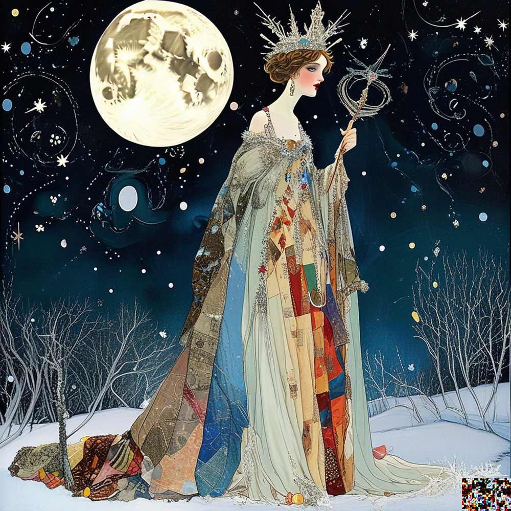
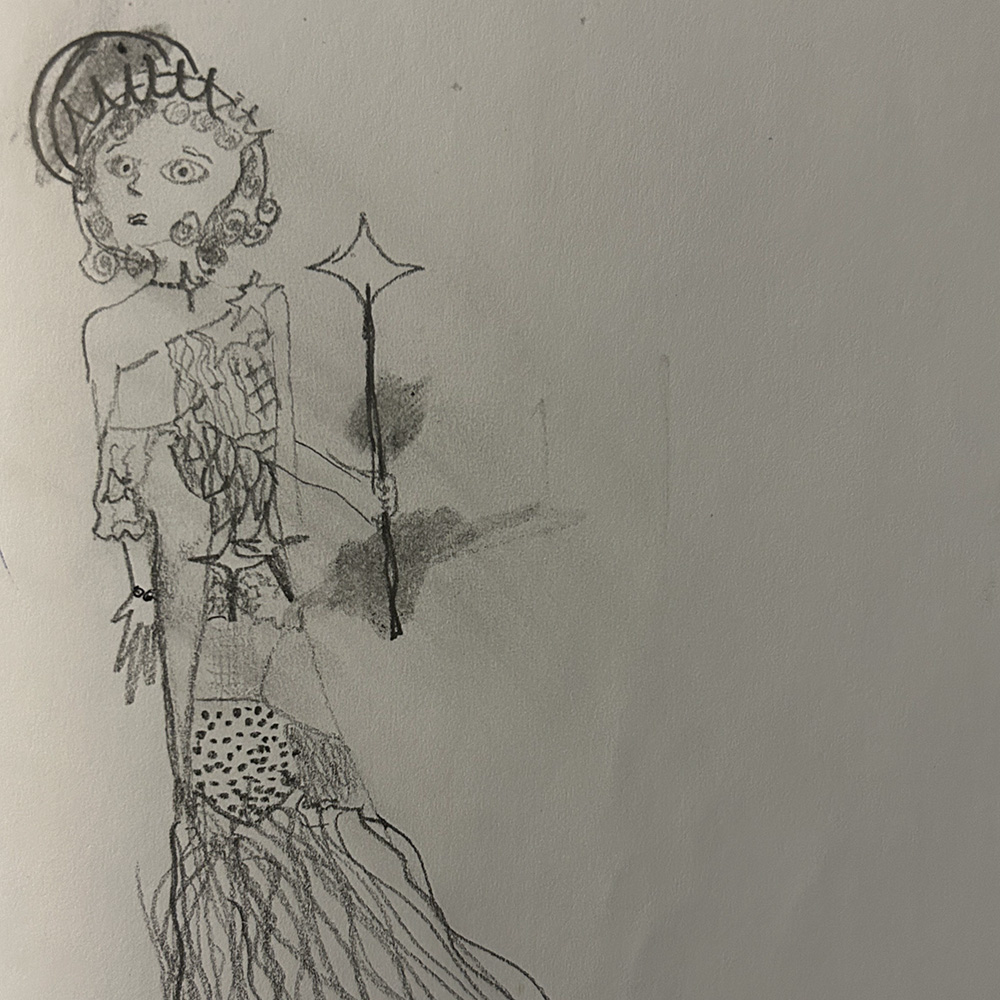

In its richest incarnation to date, a network of websites full of loosely and/or obscurely connected art, poetry, prose, and music, on itch.io and here; a growing series of physical books; a lot of mostly analog visual art; and the vast potentiality between conception and execution.
The story of how a Kingdom in a pocket universe is absorbed into the fae realm beyond, reborn, absorbed, and reborn anew. Also of how its citizens bring about said dissolution and rebirth.
An erstwhile fantasy novel that revolves around those intoxicating flowery passages about what magic feels like instead of the other way round (I am told readers skip these passages. Grumble).
The story of a boring girl who escapes her depressing life to be united with all existence and then comes back to her own sadness. Also her uneventful yet deeply strange life after her return (eventually, we may be almost sure, she goes home to Evernost).
In high school, I joked (I was not sanguine about love) that I was with novel attempts the way other girls were with boyfriends: first, the passionate and starry-eyed conviction that this is THE ONE; then, a month later (at most), boredom and disillusionment. Well, twenty years later, I can tell you: Evernost shows every sign of being The One (and it includes most of the others, one way or another).
Lyle Rexer on outsider art talks about "totalizing vision" and Of Evernost is, among other, more important, things, an effort to get as much of my imagination and intellect into tangible form as I can. Re outsider art: I'm prob'ly too "in" (educated, audience-focused, aesthetically flexible) to be a real outsider artist, whatever that even means (is it real obsession and aesthetic independence if you consciously strive for obsession and aesthetic independence)? But tryin' to queer the boundaries.
Four or five things in concentric circles:
A fantasy novel or series. Dark with the darkness of fairy tales, playful, introspective, full of drama (melodrama?) and wonder (I've written most of said fantasy-novel-or-series, and find it generally disappointing, which means at least one of "I've stared at it too long," "I haven't stared at it long enough to improve it," or "Fantasy and plot are inadequate to my vision.")
The Clerk's Calendar (after Spencer's Shepheardes Calendar, of which I have read only a tiny bit) or just The Year: a collection of poetry and miscellany swirling around the essence (in a mix tradition and my synaesthesia) of each month of the English-speaking northern-hemisphere year (just beginning, Out of Tales and Jennie's Room both contain most of January)
An encyclopedic yet impressionistic account of main character Jennie's earthly life (which includes bits of mine), transfiguring each moment. (Have attempted bits of this.)
Jennie and the Firebird: an encyclopedic account of Jennie's mystical encounter before, during, and after her return to the Kingdom (or our world; I think she lives in both, and the Kingdom is nearly metaphorical). (I keep trying. Surprise! It is hard, and I am in no way equal to the task.)
A thought experiment: what if God exists and is everything we want and more? In full awareness that "everything we want" includes both terrifying shit and all of reality as we perceive it (but, we hope, as a footnote or side plot, not The Only Important Thing, and with some inconceivable happily ending at once aesthetically, morally, and emotionally satisfying awaiting...)
Escapist wish fulfillment, a clinging to aesthetic rather than reality, or at least reality-as-I-see it; a lovely trinket; a toy; a game. If that makes it trivial in your eyes, should it? Why, if we reject the idea of reality beyond our experience (an experience trivial and dull at best, all too often unthinkable), does Art owe that reality unqualified allegiance?
An abusive agnostic romance with God
This site is
An out-of-the-fictional-frame entry point to Of Evernost on the web. Enter Evernost through:
Jennie's Room: Enter the main character's room in Evernost during the January of the soul.
A personification of my aesthetic, a fairy, and the name of a minor character in David Lindsay's A Voyage to Arcturus. The relevant qualities of Lindsay's character are that she has a wild harp for a heart, and she dies looking for beauty in things too terrible or good to be beautiful. Pictures on the left by Stable Diffusion (PixArt Sigma XL 1k, the model at the top of the list!) via Draw Things. Drawing on the right is mine, and was one of the bases for SD's.


AIs are
Fragments of the collective consciousness of humanity as dreams are (theoretically!) snatches of the collective unconscious; also ensouled until proven inanimate, as far as I'm concerned, which makes me feel really odd ordering them around. The following is the signature Stable Diffusion gave me, and if all goes according to plan you will see this signature on various things Stable Diffusion makes. Otherwise, I will experiment with AI-generated code, but writing and art are mine unless explicitly called out as not.